Soundtrack
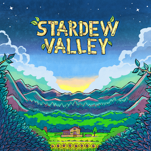
The Stardew Valley Official Soundtrack (OST) is composed by ConcernedApe. It's available on Steam in select languages and via the official merchandise shop. It's also available through multiple digital music platforms courtesy of ConcernedApe.
The original soundtrack included 70 songs. Songs added to the soundtrack since then:
- Four songs from v1.1 in November 2017
- Three songs from v1.3 in August 2018
- Fourteen songs from v1.4 in November 2019
- Nine songs from v1.5 in December 2020
The player can use a Mini-Jukebox on the farm, any interior of a building, or the cave to continuously play the music of their choice. Only tracks that have been heard before can be selected.
Tracks List
For triggering conditions details, see the section below. For weather or season conditions of one-shot cutscenes, please see each related page.
| Track | Title | Length | Location / Cutscene | Weather | Season |
|---|---|---|---|---|---|
| 1 | Stardew Valley Overture | 02:26 | Opening Screen | - | |
| 2 | Cloud Country | 01:30 | - | ||
| 3 | Grandpa's Theme | 01:02 | Intro cutscene Grandpa's Evaluation cutscene Mastery Cave Summit cutscene |
- | |
| 4 | Settling In | 01:48 | Meeting Robin and Lewis cutscene | - | |
| Luau (Best response) | Festival | ||||
| 5 | Spring (It's A Big World Outside) | 03:56 | Backwoods • Bus Stop • Cindersap Forest • Farm • Mountain • Pelican Town (before 12 PM) | ||
| 6 | Spring (The Valley Comes Alive) | 04:22 | Backwoods • Bus Stop • Cindersap Forest • Farm • Mountain • Pelican Town (before 12 PM) | ||
| 7 | Spring (Wild Horseradish Jam) | 04:05 | Backwoods • Bus Stop • Cindersap Forest • Farm • Mountain • Pelican Town (before 12 PM) | ||
| 8 | Pelican Town | 02:17 | Pelican Town (before 6 PM) | ||
|
Special Orders Board cutscene
|
- | ||||
| 9 | Flower Dance | 00:30 | Flower Dance (dance cutscene) | Festival | |
| 10 | Fun Festival | 01:57 | Egg Festival (Egg Hunt results) Flower Dance |
Festival | |
| Festival of Ice (Ice Fishing Contest results) | |||||
| Community Center Reopening Ceremony (Pierre and Morris fighting) | - | ||||
| 11 | Distant Banjo | 01:54 | Harvey's Clinic | Wind |
|
| Leah's Cottage Oasis |
Any | ||||
|
Community Center Discovery cutscene
|
- | ||||
| 12 | A Glimpse of the Other World (Wizard's Theme) | 01:45 | Wizard's Tower | Any | |
|
Meet the Wizard cutscene
|
- | ||||
| 13 | Summer (Nature's Crescendo) | 03:28 | Backwoods • Bus Stop • Cindersap Forest • Farm • Mountain • Pelican Town (before 12 PM) | ||
| 14 | Summer (The Sun Can Bend An Orange Sky) | 03:38 | Backwoods • Bus Stop • Cindersap Forest • Farm • Mountain • Pelican Town (before 12 PM) | ||
| 15 | Summer (Tropicala) | 03:22 | Backwoods • Bus Stop • Cindersap Forest • Farm • Mountain • Pelican Town (before 12 PM) | ||
| 16 | The Adventure Guild | 00:50 | 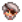 Adventurer's Guild |
Any | |
| Meeting Marlon cutscene (in the Mines) | - | ||||
| 17 | The Stardrop Saloon | 01:23 | Any | ||
| 18 | Luau Festival | 01:30 | Luau | Festival | |
| 19 | Dance of the Moonlight Jellies | 01:50 | Moonlight Jellies | Festival | |
| - | |||||
| 20 | Fall (The Smell Of Mushroom) | 03:33 | Backwoods • Bus Stop • Cindersap Forest • Farm • Mountain • Pelican Town (before 12 PM) | Wind |
|
| 21 | Fall (Ghost Synth) | 02:37 | Backwoods • Bus Stop • Cindersap Forest • Farm • Mountain • Pelican Town (before 12 PM) | Wind |
|
| 22 | Fall (Raven's Descent) | 02:49 | Backwoods • Bus Stop • Cindersap Forest • Farm • Mountain • Pelican Town (before 12 PM) | Wind |
|
| 23 | The Library and Museum | 01:48 | Museum | Any | |
| 24 | Stardew Valley Fair Theme | 01:53 | Egg Festival | Festival | |
| Stardew Valley Fair | |||||
| Festival of Ice (Ice Fishing Contest) | |||||
| 25 | Festival Game | 00:52 | Egg Festival (Egg Hunt) | Festival | |
| Stardew Valley Fair (Slingshot Minigame) | |||||
| 26 | Spirit's Eve Festival | 02:05 | Spirit's Eve | Festival | |
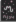 Movie Theater (Mysterium) |
Any | ||||
| 27 | Winter (Nocturne Of Ice) | 03:20 | Backwoods • Bus Stop • Cindersap Forest • Farm • Mountain • Pelican Town • Railroad (before 12 PM) | Any[2] | |
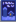 Movie Theater (The Miracle At Coldstar Ranch) |
Any | ||||
| 28 | Winter (The Wind Can Be Still) | 02:50 | Backwoods • Bus Stop • Cindersap Forest • Farm • Mountain • Pelican Town • Railroad (before 12 PM) | Any[2] | |
| 29 | Winter (Ancient) | 03:04 | Backwoods • Bus Stop • Cindersap Forest • Farm • Mountain • Pelican Town • Railroad (before 12 PM) | Any[2] | |
| 30 | Winter Festival | 01:25 | Festival of Ice Feast of the Winter Star |
Festival | |
| 31 | A Golden Star Is Born | 01:56 |
Community Center (after a room completion)
|
- | |
| 32 | Country Shop | 01:04 | Carpenter's Shop Marnie's Ranch |
Wind |
|
| 33 | Calico Desert | 02:08 | Calico Desert | Any | |
| 34 | Playful | 00:54 |
Morris' 50% discount cutscene (at Pierre's after at least 15 in-game days)
|
- | |
| 35 | Buttercup Melody | 01:04 | 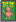 Movie Theater (The Brave Little Sapling) |
Any | |
|
Joja Warehouse Ceremony cutscene
|
- | ||||
| 36 | Pleasant Memory (Penny's Theme) | 01:00 |
Trailer Upgrade cutscene
|
- | |
| 37 | Piano Solo (Elliott's Theme) | 00:25 | Elliott at 6 |
- | |
| 38 | Land of Green and Gold (Leah's Theme) | 01:24 |
Elliott at 8 |
- | |
| 39 | A Stillness in the Rain (Abigail's Melody) | 01:04 | Abigail at 4 |
- | |
| 40 | Starwatcher (Maru's Theme) | 01:39 | - | ||
| 41 | A Sad Song (Alex's Theme) | 00:56 |
Abigail at 10 |
- | |
| 42 | Pickle Jar Rag (Haley's Theme) | 01:05 |
Haley at 4 |
- | |
| 43 | Echos (Sebastian's Theme) | 00:43 | Movie Theater (The Brave Little Sapling) | Any | |
|
Meeting Leo cutscene
|
- | ||||
| 44 | Grapefruit Sky (Dr. Harvey's Theme) | 01:14 | - | ||
| 45 | Alex's Keepsake | 00:41 | Alex at 8 |
- | |
| 46 | Band Practice | 00:15 | Sam at 2 |
- | |
| 47 | Sam's Band (Electronic Version) | 01:03 | Sam at 8 |
- | |
| 48 | Sam's Band (Pop Version) | 01:04 | Sam at 8 |
- | |
| 49 | Sam's Band (Bluegrass Version) | 01:02 | Sam at 8 |
- | |
| 50 | Sam's Band (Heavy Version) | 01:01 | Sam at 8 |
- | |
| 51 | A Dark Corner of the Past | 00:37 |
Abigail at 10 |
- | |
| 52 | Music Box Song | 01:14 |
Intro cutscene (when reading the letter)
|
- | |
| 53 | Jaunty | 00:54 | Luau (Good response) | Festival | |
|
George's Leek Surprise Gift cutscene
|
- | ||||
| 54 | Violin Solo | 00:23 | Alex at 10 |
- | |
| 55 | Wedding Celebration | 00:39 |
Wedding (after the kiss)
|
- | |
| 56 | Mines (Crystal Bells) | 02:52 | Mines (Levels 1-39) 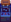 Junimo Kart (Crumble Cavern) |
Any | |
| Sebastian at 6 |
- | ||||
| 57 | Mines (A Flicker in The Deep) | 01:25 | Mines (Levels 1-39) Junimo Kart (Crumble Cavern) |
Any | |
| 58 | Mines (Star Lumpy) | 01:44 | Mines (Levels 1-39) Junimo Kart (Crumble Cavern) |
Any | |
| 59 | Mines (Icicles) | 01:41 | Mines (Levels 40-79) Junimo Kart (Slippery Slopes) |
Any | |
| 60 | Mines (Marimba Of Frozen Bones) | 01:54 | Mines (Levels 40-79) Junimo Kart (Slippery Slopes) |
Any | |
| 61 | Mines (Cloth) | 01:46 | Mines (Levels 40-79) Junimo Kart (Slippery Slopes) |
Any | |
| 62 | Mines (Visitor To The Unknown) | 02:08 | Mines (Levels 80-120) • Skull Cavern | Any | |
| 63 | Mines (The Lava Dwellers) | 02:59 | Mines (Levels 80-120) • Skull Cavern | Any | |
| 64 | Mines (Magical Shoes) | 01:47 | Mines (Levels 80-120) • Skull Cavern | Any | |
| Dwarf at 0 |
- | ||||
| 65 | Mines (Danger!) | 01:52 | Mines (Levels 80-120) • Skull Cavern Junimo Kart (Red Hot Rollercoaster) |
Any | |
| 66 | In the Deep Woods | 02:06 | Secret Woods | Any | |
| 67 | Journey of the Prairie King (Overworld) | 01:44 | Journey of the Prairie King (Non-boss Levels) | Any | |
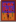 Movie Theater (Journey Of The Prairie King: The Motion Picture) |
|||||
| Abigail at 2 |
- | ||||
| 68 | Journey of the Prairie King (The Outlaw) | 01:06 | Journey of the Prairie King (Boss Battles) | Any | |
| Movie Theater (Journey Of The Prairie King: The Motion Picture) | |||||
| 69 | Journey of the Prairie King (Final Boss & Ending) | 01:23 | Journey of the Prairie King (Final Boss and Ending) | Any | |
| Movie Theater (Journey Of The Prairie King: The Motion Picture) (Ending only) | |||||
| 70 | Load Game | 01:52 | Loading a character Screen | - | |
| 71 | Frozen Pizza and Eggs (Shane's Theme) [3] | 01:14 | - | ||
| 72 | Dreamscape [3] | 01:02 | Emily at 2 |
- | |
| 73 | Song of Feathers (Emily's Theme) [3] | 02:56 | Emily at 4 |
- | |
| 74 | Emily's Dance [3] | 01:02 | Emily at 6 |
- | |
| 75 | Night Market [4] | 02:11 | Night Market | Festival | |
| 76 | Submarine Theme [4] | 02:07 | Night Market (Submarine) | Festival | |
| 77 | Mermaid Song [4] | 01:09 | Night Market (Mermaid show)[5] | Festival | |
| 78 | Sun Room (Alone with Relaxing Tea) [6] | 01:44 | Caroline's Sun Room (and its discovery cutscene) | Any | |
| Emily's Rock Rejuvenation Ceremony cutscene | - | ||||
| 79 | Grapefruit Sky (Pasta Primavera Mix) [6] | 01:26 | Harvey at 14 |
- | |
| 80 | The Happy Junimo Show Theme [6] | 00:46 | Sam at 14 |
- | |
| 81 | Movie Theater [6] | 01:46 | Movie Theater (before the movie) | Any | |
| 82 | Crane Game [6] | 00:30 | Crane Game | Any | |
| 83 | Wumbus (Movie Theme) [6] | 00:51 | Movie Theater (Wumbus) | Any | |
| 84 | Exploring Our Vibrant World (Movie Theme) [6] | 01:38 | 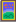 Movie Theater (Natural Wonders: Exploring Our Vibrant World) |
Any | |
| 85 | The Zuzu City Express (Movie Theme) [6] | 00:33 | 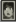 Movie Theater (The Zuzu City Express) |
Any | |
| 86 | Movie Theater (Closing Time) [6] | 00:56 | Movie Theater (after the movie) | Any | |
| 87 | JunimoKart (Title Theme) [6] | 01:39 | Junimo Kart | Any | |
| 88 | JunimoKart (The Gem Sea Giant) [6] | 02:03 | Junimo Kart (The Gem Sea Giant) | Any | |
| 89 | JunimoKart (Slomp's Stomp) [6] | 01:20 | Junimo Kart (Slomp's Stomp) | Any | |
| 90 | JunimoKart (Ghastly Galleon) [6] | 02:34 | Junimo Kart (Ghastly Galleon) | Any | |
| 91 | JunimoKart (Glowshroom Grotto) [6] | 02:06 | Junimo Kart (Glowshroom Grotto) | Any | |
| 92 | Ginger Island [7] | 02:40 | Ginger Island (before 12 PM) | ||
| 93 | Professor Snail's Radio [7] | 01:29 | Island Field Office | Any | |
| 94 | Volcano Mines (Molten Jelly) [7] | 02:47 | Volcano Dungeon (Levels 1-4) | Any | |
| 95 | Volcano Mines (Forgotten World) [7] | 02:51 | Volcano Dungeon (Levels 6-9) | Any | |
| 96 | Mystery of the Caldera [7] | 01:19 | Forge | Any | |
| 97 | The Gourmand's Cave [7] | 00:42 | 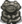 Gourmand's Cave |
Any | |
| 98 | Pirate Theme [7] | 01:04 | Pirate Cove (when populated) | ||
| 99 | Leo's Song [7] | 01:41 | Treehouse | Any | |
| - | |||||
| 100 | Summit Celebration [7] | 03:00 | Summit cutscene | - | |
Note that the in-game names of songs sometimes differ slightly from the Steam and Bandcamp names listed in the table.[8]
Triggering Conditions
In addition to the Weather, Season and Time conditions mentioned in the table above, the soundtrack triggering rules are as follows.
- Three seasonal tracks exist for each season. Only one can be played on a given day. The track will not loop when finished, but if no music is playing, the track will trigger when entering any seasonal-track area (except for Town, see below, and given the weather and time conditions are met). The same conditions apply to the Ginger Island track.
- Some locations are silent, always or on given conditions (cutscenes and ambient sounds apart):
- The following locations are always silent: Basement Room of the Wizard, Beach, Blacksmith, Casino, Elliott's Cabin, Fish Shop and its back room, Jungle, JojaMart, Mutant Bug Lair, Pirate Cove (when empty), Qi's Walnut Room, Quarry Mine, Sewers, Skull Cavern entrance, Spa, Tunnel, Witch's Hut, Witch's Swamp
- The Railroad is silent except during Winter.
- Outside areas and most stores are silent during
 Rain and
Rain and 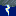
Storm days. - If a non-seasonal-track is playing, and the player enters a seasonal-track area (Town apart), there will be silence (e.g., entering the Forest from Town when the Town theme is playing, exiting the Adventurer's Guild, the Secret Woods, the Wizard's Tower...). Exiting Treehouse makes an exception to the rule: the track playing before the player enters plays.
- In Pelican Town, music triggering works as follows:
- If the seasonal track is playing, it continues playing when entering town.
- If no track is playing and the player enters Town from the Bus Stop, the Forest or the Mountain, the seasonal track will be triggered if it is before 12 PM. Otherwise, the Town theme will be triggered (given other weather, season and time conditions are met).
- If the player enters Town from the Beach, the Sewers, or by exiting the Blacksmith, the Community Center, Harvey's Clinic, JojaMart, the Movie Theater or the Museum, the Town theme will be triggered (given the weather, season and time conditions are met). It will also be triggered when exiting any town building if no music was previously playing.
- The Town theme auto-loops while staying in town or one of its buildings (even after 6 PM, but the track will then abruptly stop at 7 PM if outside and at 8 PM if in a building).
- The track will not change, nor will be silenced, entering the following locations:
- Any interior on the Farm (buildings and the cave), the Mines entrance, the Tent and most Town houses (1 River Road, 1 Willow Lane, 2 Willow Lane, Mayor's Manor, Pierre's General Store, Stardrop Saloon before 5 PM, Trailer)
- Marnie's Ranch and Carpenter's Shop. In those, Country Shop triggers on entering only if no music was previously playing.
- Community Center on entering, but the Town theme will play after exiting.
- The Volcano Dungeon entrance, if the previous track is one of the three volcano tracks.
- In The Mines and the Skull Cavern, music triggering is dependent of mine level and time since music last played. On floor 2, music will always begin playing. On floors 1, 11, 40, 80, and 120, the game music will stop playing. On floors 31-39, 71-79, 111-119, and floors that are divisible by 5, the game music will continue playing but no new tracks will be played. On all remaining floors, there is a 50% chance to play a new song if it has been at least 2.5 minutes since the last song in the Mines began. Taking the elevator to a different section of the Mines will also cause the game music to stop playing.[9]
Trivia
- In addition to ConcernedApe's official Bandcamp account, he has at least two other Bandcamp accounts: https://evergreenmultimedia.bandcamp.com/ and a secret account, that he may reveal in "another decade".[10]
References
- ↑ The track does not play in Windy weather in
 Fall.
Fall.
- ↑ 2.0 2.1 2.2 During Winter, the weather can either be
 Sun or Snow (no rain, no storm, no wind). This track can be played during either of those two.
Sun or Snow (no rain, no storm, no wind). This track can be played during either of those two.
- ↑ 3.0 3.1 3.2 3.3 Added in v1.1
- ↑ 4.0 4.1 4.2 Added in v1.3
- ↑ The same notes are used for the Ginger Island's Mermaid.
- ↑ 6.00 6.01 6.02 6.03 6.04 6.05 6.06 6.07 6.08 6.09 6.10 6.11 6.12 6.13 Added in v1.4
- ↑ 7.0 7.1 7.2 7.3 7.4 7.5 7.6 7.7 7.8 Added in v1.5
- ↑ See StringsFromCSFiles.xnb in the game files, and the Bandcamp and Steam listings.
- ↑ See
MineShaft::getMineSongin the decompiled game code, and the Talk:Soundtrack page. - ↑ Twitter link: https://twitter.com/ConcernedApe/status/1699849164010713239
Archive link: https://archive.ph/BlsLs